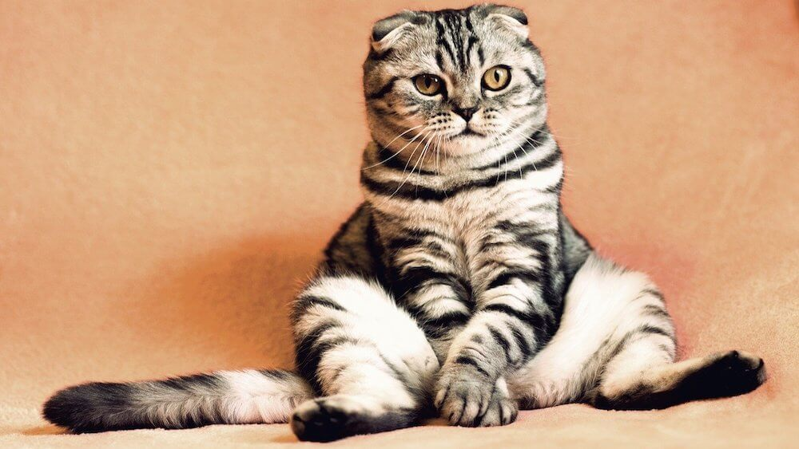

Существует много моментов, которые необходимо учитывать при содержании кошки. Но важно помнить, что ни один владелец не совершенен. Большинство владельцев учатся на собственном опыте, но в данном разделе вы можете найти ответы на беспокоящие вас вопросы.
Одна из важнейших вещей, которые вы можете сделать для вашей кошки - это играть с ней. Это помогает поддерживать ее здоровье, укрепляет вашу связь с ней и даже может слегка улучшить ваше собственное здоровье. К счастью, кошки любят играть, и потому их мотивация не будет будет такой сложной, как ваш собственный поход в спортзал в пять часов утра. Все, что нужно - это правильный подбор игрушек для кошки, некоторая звуковая стимуляция и игры! В целом, игры с кошкой почти полностью заключаются в стимулировании ее инстинктов охоты и преследования.
Кошкам очень нравятся игры, и все, что требуется от вас, это немного творчества. Во-первых, постарайтесь спрятать угощения внутри вашего дома, для стимуляции ее инстинкта охоты. Так как кошка рождена для охоты, ей очень понравится искать сюрпризы. Вы также можете играть в прятки. Просто прячьтесь в разных комнатах вашего дома и называйте ее имя, всегда помня о том, что вы должны наградить ее, когда она вас найдет. Кошачьи игрушки - также хороший способ заставить вашу кошку двигаться. Попробуйте игрушки в виде палочки с перьями на конце, небольшие машинки на радиоуправлении и колокольчики. Или просто привяжите резинку к одной из ее игрушек и тяните за резинку, чтобы казалось, что она двигается - она тут же набросится на игрушку. Следует помнить, что не следует позволять кошке использовать ваши руки и пальцы в качестве «добычи». Если вы будте так делать, она будет считать, что охота на людей допустима. Лучше остановить такое поведение до того, как оно станет второй натурой вашей кошки - не говоря уже о том, что от этой привычки будет сложно отучить.
Не важно взяли вы кошку впервые или ваш питомец переходит на новый этап своей жизни, вы должны быть уверены в том, что она получает правильное питание. Кормление питомца высококачественным, сбалансированным кормом - самое лучшее, что вы можете сделать, чтобы помочь вашей кошке прожить долгую и здоровую жизнь
Вы возможно задумывались, по каким причинам, кошкам не следует сидеть с вами за одним обеденным столом - и одна из них заключается в том, что человеческая еда вредна для их здоровья, она может содержать слишком много калорий для небольшого животного, и некоторые продукты могут быть ядовитыми для кошек.
Заполните форму, чтобы получить полный список необходимых продуктов питания для Вашего любимца